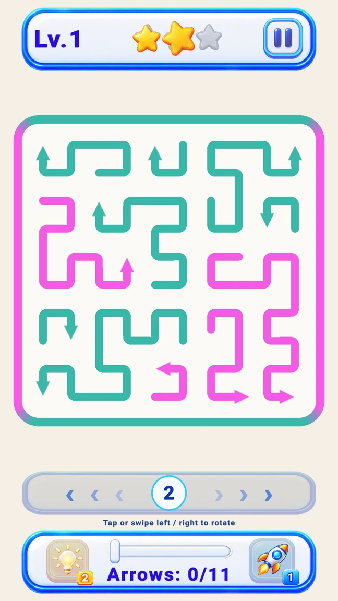
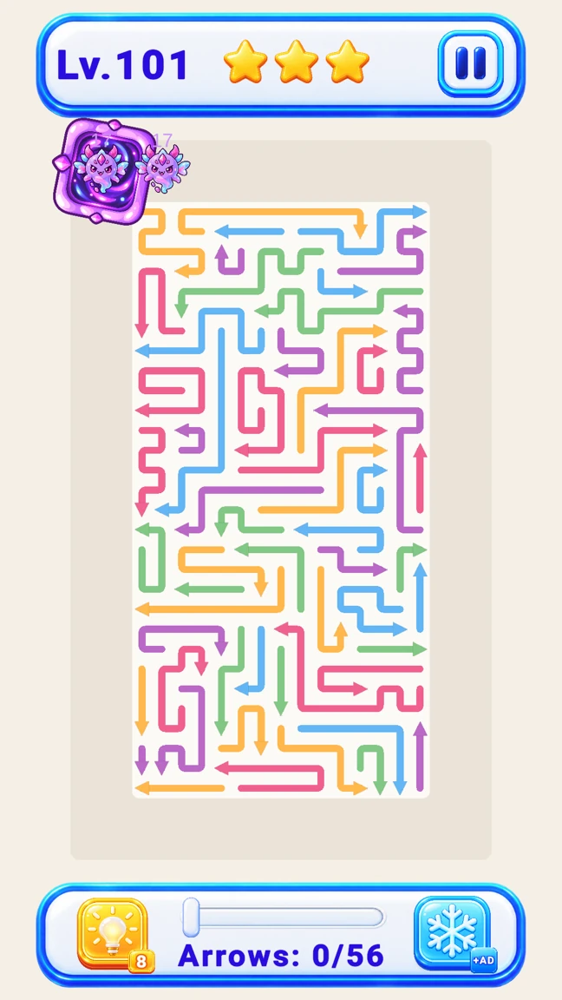

Şekiller
Bükülen oklardan oluşan resmin içindeki sırayı bul. Bir yol aç ve şekli her hamlede biraz daha çöz.
Penguen bulmacası · 13 Kasım native kayıt

Yolu incele. Bir çıkış bul. Ok bulmacasını çözmenin üç farklı yolunu keşfet.
Geliştirme aşamasında. Genel yayın ayrıntıları henüz doğrulanmadı.

Tek bir yön fikri, üç farklı karar. Görseller geliştirme kayıtlarıdır; bu oturumda alınmış yeni ekran görüntüleri değildir.
Bükülen oklardan oluşan resmin içindeki sırayı bul. Bir yol aç ve şekli her hamlede biraz daha çöz.
Penguen bulmacası · 13 Kasım native kayıt
Oklar sabit kalır, renkli çerçeve döner. Bir okun çıkabilmesi için yolunun açık ve çıkış renginin uygun olması gerekir.
Renkli çerçeve · 9 Kasım native arşiv

Düşmanlar tahta çevresinde ilerlerken oklara çıkış yolu aç. Bulmaca ve savunma aynı kararların içinde buluşur.
Savunma tahtası · tarihli native arşiv

20 saniyelik ham Unity kaydı. Solver, oyunun gerçek aksiyonlarını tetikler; tahta ve hareketler oyunun kendi görüntüsüdür. Bu kaynak video sessizdir.
Önceki ikonlar ve montajlı Reels beğenilmedi. Burada onaylı marka veya kurgu olarak kullanılmıyorlar.
Genel Google Play bağlantısı ve yayın tarihi doğrulanmadı. Yayına hazırlık tamamlandığında eklenecek.
Şekiller tanınabilir siluetler kullanır. Renk Değişimi uygun renkli çıkışları ve dönen çerçeveyi ekler. Savunma ise yönlü okları düşmanlarla birleştirir.
Evet. Native Unity geliştirme kayıtları kullanıldı; kaynak dosyaları ve tarihleri kayıtlıdır. Bazı görüntüler arşivden gelir ve yayın öncesi yenilenmelidir.
Bu yerel taslakta form, analytics betiği, reklam etiketi, dış font veya hesap sistemi yoktur. Bu açıklama yalnız site içindir; oyundaki SDK verileri için değildir.
Doğrulanan güncel modlar Savunma, Şekiller ve Renk Değişimidir. Ayrı bir Classic modu tanıtılmıyor.
Doğru bilgilerle hazırlanmış geliştirme basın kiti: oyun özeti, mod açıklamaları, üç kaynak görüntü ve kayıt bilgileri. Uydurulmuş yayın tarihi, yorum veya indirme sayısı yok.
Geliştirme basın kitini indirResmî iletişim ve sosyal bağlantılar doğrulandıktan sonra eklenecek.